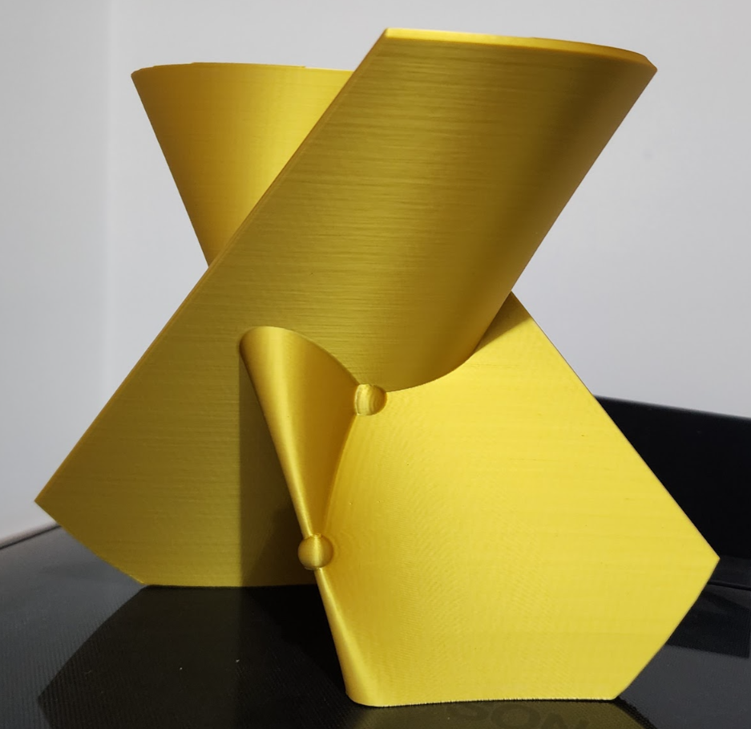

$H_k$-Singularity
The map germ $f(x,y)=(x,y^3, xy+y^{3k-1})$, $ k >1$ is called singularity $H_k$ by David Mond. This map appear in the classification of smooth map-germs
from $(\mathbb{R}^2,0)$ to $(\mathbb{R}^3,0)$ by him, see [1]. In the image of stable perturbation $f_t$ of $f$ there are two types of $0$-stable singularity,
$2$ crooscaps ($C$) and $k-1$ ordinary triple point ($T$).
For $k=2$, Ton Marar (Thesis, 1989, Warwick University) found the perturbation $f_t(x,y)=(x,y^3-ty, xy+y^5-ty^3)$, such that for a certain parameter $t > 0$,
the two points of type $C$ and one point of type $T$ could be described in real coordinates and that their real and complex geometry of image $X_t = f_t(\mathbb{C}^2)$
coincide in the sense of good real perturbation, [2].
In [2], page 162, appear the following perturbation $f_t$ of $f$
\begin{equation}
f_t(x,y)=(x,y^3-ty, xy + y^2(\prod_{i=1}^{k-1}(y^{ 3}-ty-c_i)
\end{equation}
where $t> 0$ and $c_i$ are real numbers, $c_i \neq c_j$, $i\neq j$ and $|c_i| < (2/3)t^{3/2}$, whose image equation for $k=2$ is given by:
$$H_2:\ \ Y^5 + X^3Y - tXY^3 + 3XY^2Z - 3cY^4 + tX^2Z + 2ctXY^2 - 3cXYZ + 3c^2Y^3 - t^2Y^2Z + 2tYZ^2 - Z^3 - c^2tXY - c^3Y^2 + 2ct^2YZ - 2ctZ^2 - c^2t^2Z=0, \ \ |c| < (2/3)t^{(3/2)}$$
[1] D. Mond, On the Classification of germs of maps from $(\mathbb{R}^2,0)$ to $(\mathbb{R}^3,0)$, Proc. London Math. Soc. 50 (1985), 333-369.
[2] W. L. Marar; D. Mond, Real map-germs with good real perturbations, Topology 35 (1996), p. 157–165.
3D modeling and printing by Prof. Aldicio José Miranda.

3D-printing of image of stable deformation of $H_2$-singularity.